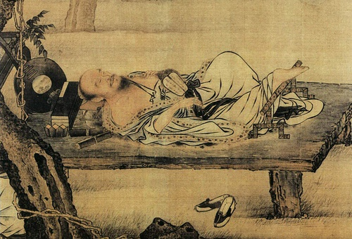
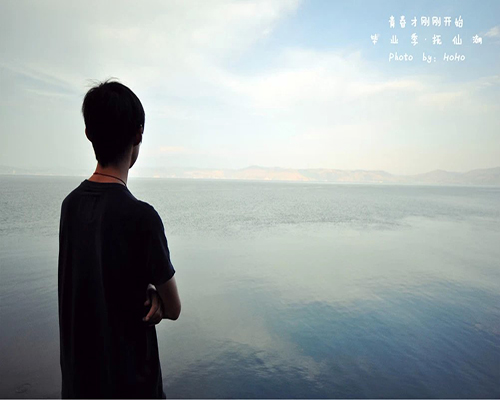

智慧不要外露，否则别人不是怕你，就是嫉妒你。只求利益要注意身后的危险。
心无旁骛，至善之境。
没有对手是寂寞的，悲哀的。
心不虚怎么能容道呢？
...全文
发表时间：2016-4-30作者：中华笔记分类【笔记】
青春不是年华，而是心境；青春不是桃面、丹唇、柔膝，而是深沉的意志，恢宏的想
象，炙热的恋情；青春是生命的深泉在涌流。
青春气贯...全文
发表时间：2016-4-21作者：塞缪尔•厄尔曼分类【诗词】

成长中，每一次低头都是对自己的肯定。
2."我很好"不是指你终于熬到了有钱，有了朋友，有了被人照顾的日子。而是你终于可以习惯了没有钱，没有朋友，没有人照顾的日子
...全文
发表时间：2016-4-21作者：中华笔记分类【杂记】

一袭微雨，划过静好的夏日，洗涤岁月的尘埃，润了一份心境，
给季节留下一抹清凉。风捻着心事，在岁月素白的笺上暗香盈袖，清浅的时光，
岁月的花瓣悄然绽放，芬芳了素指流年；如水的情怀，氤氲了一帘幽梦，轻盈一段指间的光阴...全文
发表时间：2016-4-21作者：茶茶分类【散文】
青春不是年华，而是心境；青春不是桃面、丹唇、柔膝，而是深沉的意志，恢宏的想
象，炙热的恋情；青春是生命的深泉在涌流。
青春气贯...全文
发表时间：2016-4-21作者：塞缪尔•厄尔曼分类【诗词】
成长中，每一次低头都是对自己的肯定。
2."我很好"不是指你终于熬到了有钱，有了朋友，有了被人照顾的日子。而是你终于可以习惯了没有钱，没有朋友，没有人照顾的日子
...全文
发表时间：2016-4-21作者：中华笔记分类【杂记】